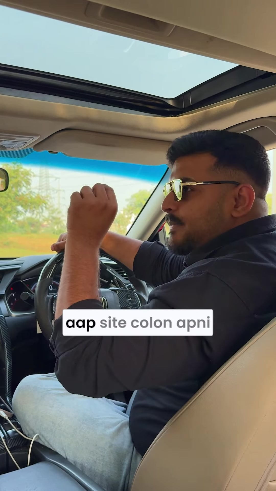

Marketing · Technical-SEO
Moving from Page 2 to Page 1 on Google: Internal Link Siloing & Search Operator Discovery
Executive Summary
Web pages ranking on Page 2 of Google SERPs (positions 11–20, known as "striking distance keywords") already possess baseline topical authority and search engine trust. Creating brand-new content to target related terms is resource-intensive and slow. Instead, redirecting internal PageRank and semantic equity from existing indexed pages toward the stuck URL can rapidly propel it into top-5 positions on Page 1.
This tutorial outlines a 4-step framework combining Google's advanced site: search operator to discover semantically aligned pages on your own domain, targeted in-content internal anchor link injection, title tag refresh, and rapid indexer crawling.
The 4-Step Striking Distance Optimization Framework

Step 1: Identify Relevant Donor Pages via Google Search Operator
Rather than manually guessing which older blog posts or pages should link to your target URL, let Google identify its own semantic understanding of your domain:
site:yourwebsite.com "exact target keyword"Google will return a ranked list of every URL on your domain that its algorithm deems relevant to that topic. These represent high-authority "donor pages" possessing existing contextual relevance.
Step 2: Inject Contextual Internal Links
Open the top donor pages returned in Step 1 and edit their body content:
- Locate the exact keyword or naturally related long-tail phrase in the existing text.
- If the exact phrase is absent, add a clarifying contextual sentence or paragraph.
- Hyperlink the anchor text directly to the target URL that is currently stuck on Page 2.
- Avoid sitewide footer or navigation links; prioritize contextual in-body links within the main editorial flow, as Google weights editorial links higher for PageRank distribution.
Step 3: Update and Refresh the Target Page Title Tag
Refresh the <title> element of the stuck page to increase Click-Through Rate (CTR) and reinforce keyword prominence:
- Place the primary keyword closer to the front of the title tag.
- Incorporate high-CTR modifier tokens (e.g., Year, Comprehensive Guide, Checklist, Fast).
- Ensure the title tag accurately matches user search intent to reduce SERP bounce back (pogo-sticking).
Step 4: Trigger Immediate Googlebot Recrawl
Googlebot may take weeks to organically re-crawl older donor pages. To accelerate ranking velocity:
- Submit the modified donor URLs and the target URL into Google Search Console (URL Inspection → Request Indexing).
- Alternatively, utilize reliable fast-indexing APIs or paid crawling services to prompt Googlebot re-parsing within 10–30 minutes.
- Once re-indexed, Google recalculates the internal link graph and topical authority, resulting in prompt position jumps.
Verbatim Audio Transcript
[00:00 - 00:09] Is cheez ka na mujhe aapse kam az kam bhi ek lakh charge karna chahiye tha, lekin main waise hi bata raha hoon.
[00:09 - 00:19] Aapka koi bhi page hai aapki website ka jo Google ke second page par stuck hai, and you want that page ke bhai woh ab unstuck hoke 5th, 4th, 2nd, 1st position pe aa jaye. Kya karna hai aapne?
[00:19 - 00:34] Aap
site:colon apni website ka naam likhenge, aage space denge, aur aapne woh exact keyword search karna hai jis keyword ke liye aap Google mein rank karna chah rahe hain.[00:34 - 00:46] Aapki website par jab woh search karenge, jitne bhi pages wahan par aayenge, woh saare pages aapke us topic se relevant honge jin pages se aap internally link kar sakte hain us page ko jisko aap unstuck karna chah rahe hain.
[00:46 - 00:54] Toh woh saare pages ko open karein, unko edit karke uske andar internal link rakh dein apne us page ko jisko aapne rank karna hai. Then, aapne apne us page ka title update bhi kar dena hai jisko rank karna chah rahe hain.
[00:54 - 01:02] And final step is: aapne koi bhi paid indexer use karke un pages ko jaldi fast crawl karwa lein taake woh internal links jo aapne add kiye hain, title update kiya hai, woh Google ke paas chala jaye. 10 minute ke andar-andar agar aapke saare pages index ho jayenge, you can't imagine the magic this thing has — aapka woh page instantly boost karega.